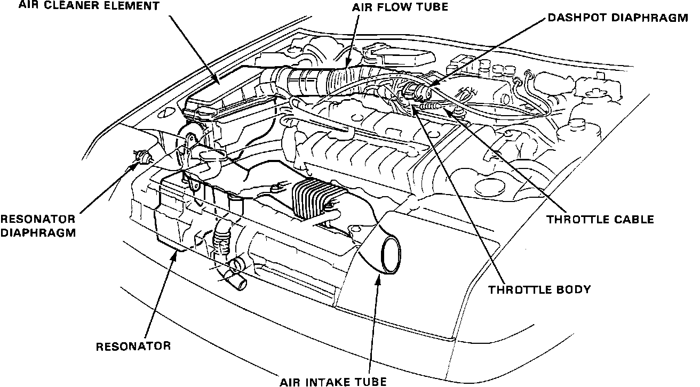

Air Cleaner Housing: Description and Operation
Intake Air System:

The Air Cleaner is of the dry paper element type. It is housed in a plastic air cleaner assembly, located in front of the right shock tower. The Air Cleaner removes dirt and contaminates from the air before it enters the engine intake system.